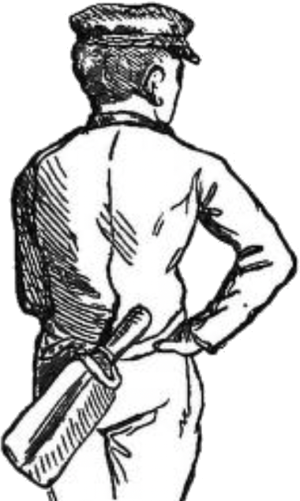
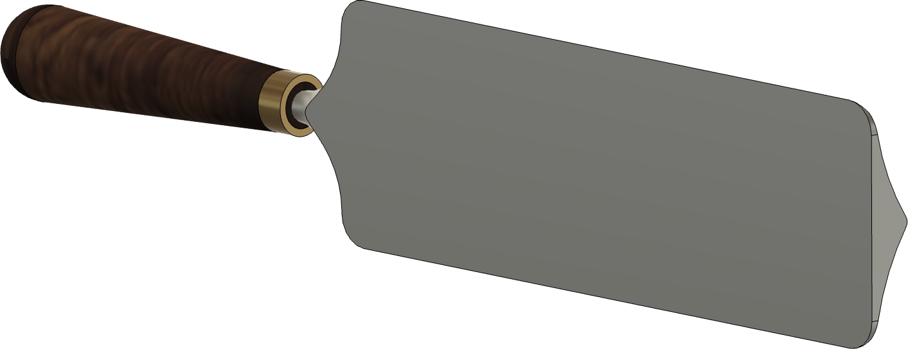
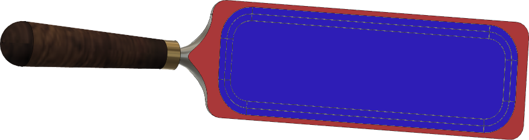

|
|
|
Pruning Knife for Trees |
Vicomte de Courval's Improved Pruning Knife

Edge Angle
The Pruning Knife is used by the arborist to prune tree limbs.
This style of tool was developed by Vicomte de Courval in the late 1800's. The blade's design with a raised rib and weight (2 lbs. 12 oz. to 3 lbs. 6 oz.) concentrated the user's effort for removing larger branches and improving the tree's growth.
Sharpen the outside edges (shown in red in the picture above), and deburr them from the bottom. usage in a way as to make the tool's use problematic.
My green thumb came only as a result of the mistakes I made while learning to see things from the plant's point of view.
H. Fred Dale
A 6" smooth cut machinist’s hand file is useful to carry in your gardening tools box. Use it to resharpen the hoe as needed throughout the gardening activity.
|

Aborist carrying a Pruning Knife in a leather sheath held over the shoulder |
|

Back Side of the Pruning Knife |
|

Back Side of the Pruning Knife with Relief Area |
Vicomte de Courval's innovations in pruning tools and techniques were highly influential. He emphasized careful pruning to enhance tree health and timber value, demonstrating these methods at agricultural exhibitions in Paris (1861) and London(1862).
The back side of the blade is where the final sharpening takes place. This is where the burr is removed, and as with chisels, a flattened back will make the arborist's job much easier as it allows the tool to be swung flat against the limb or trunk of the tree.
The bottom picture on the right shows an area in the center of the back where the surface has been relieved below the surface of the back. This is like done on Japanese chisel and plane blades, and makes the sharpening easier as the surface area which needs to be addressed is significantly smaller. This is denoted in the red and blue colouring: the blue is the relieved area, and the red is the part which needs to be addressed.
For removing large nicks in the edge, a Tormek grinder or a 12-14" bastard file machinist’s hand file will work sufficiently well. Hopefully the arborist has not hit on too large a metal object within the tree.
Using a bench or angle grinder is not recommended as this will surely overheat the tool, removing the temper from the edge. Additionally, the shaping of the edge is difficult to control.
If using a Tormek,
If you choose to use a machinist’s hand file,
Micro bevel Notes:
A micro bevel is not recommended: It is not needed.
Sharpness scales (as shown in the grey icon to the left) are used to indicate the recommended sharpness for the blades noted above. You can click on any of the icons showing the sharpness scale and be redirected to the page describing this more. Lower numbers are duller; higher numbers sharper.
These are general recommendations; you will need to use your own judgment, based on the knive’s intended purpose.